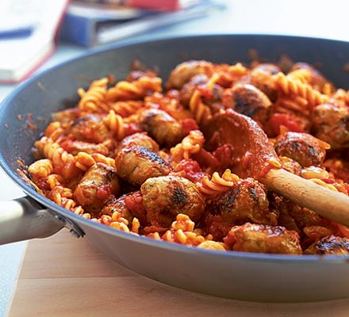

Sausage Pasta

A hearty and fast meal with good protein and carbs.
Ingredients
- 8 cumberland sausages
- 1 onion (chopped)
- 2 garlic cloves (crushed)
- 1 tsp chilli powder
- 400g tinned chopped tomatoes
- 400g rigatoni pasta
- Heat 1 tbsp olive oil in a large frying pan and fry chunky pieces of 8 pork sausages on a fairly high heat until they are golden brown all over.
- Now turn the heat down and add 1 large chopped onion and 2 crushed garlic cloves, cooking them until they have softened.
- Stir in 1 tsp chilli powder and 400g chopped tomatoes with the sausages, bring the sauce to the boil then turn the heat down and let it bubble for about 10 minutes while you cook the pasta.
- Drop pasta into a pan of boiling water and cook according to the pack instructions.
- Drain the pasta, then tip it into the frying pan with the sausage sauce, mixing well to coat. Dish up immediately with crusty bread.